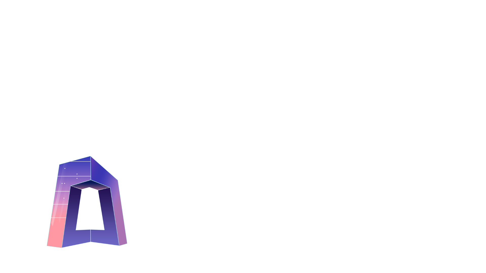
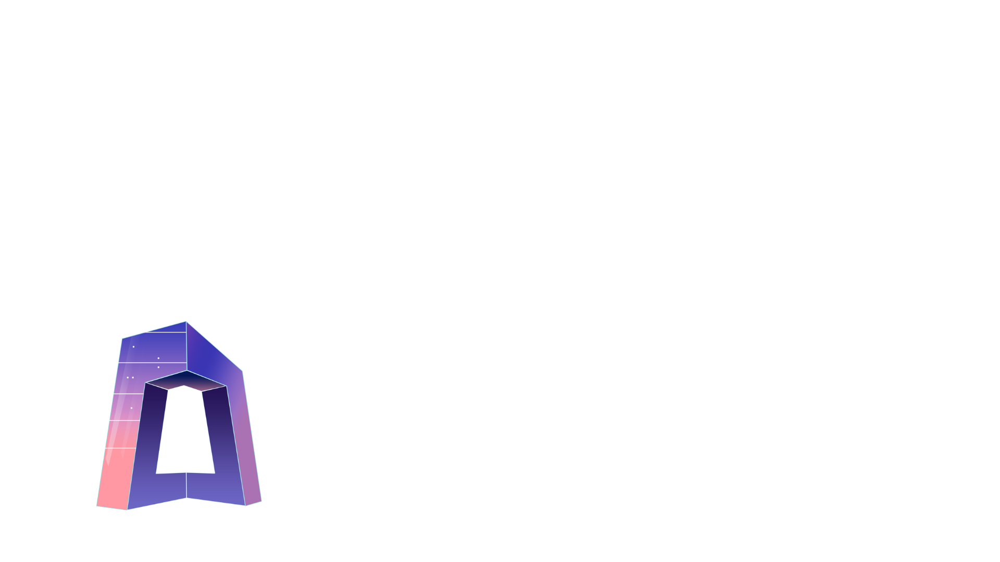

什麽是NFT？
NFT全稱為Non-FungibleToken
中文意思是「非同質化代幣」
什麽是「同質化fungible」？
經濟學上，「同質化fungible」指的是一種物品
一單位的該物品，等價於另外的一單位該種物品
打個比方，我網購了一臺筆記本
商家會從倉庫裏成百上千的存貨中發一臺給我
我無所謂商家發的是哪一臺，因為它們都是一樣的
再比如我去便利店買完東西
收銀員找了我1塊錢，它可以是任意一個1元硬幣或者紙幣
對於我來說沒有區別
這就是「同質化fungible」
我們生活中最常見的一個同質化的東西，就是"錢"
NFT，就是非同質化
與同質化相對應
非同質化通證，也就是NFT，則有著唯一性，不可替代性
你手裏有1張白紙，我手裏有1張白紙
他們本質上是一樣的，且可以互相交換
但是如果我的白紙上有名人的簽名，那他的價值就遠遠不止一張白紙
NFT就通過這樣的邏輯原理
以及基於區塊鏈底層基礎的不可篡改性
可以代表唯一的物品或數字內容
這些物品或內容可以是藝術品、音樂、視頻、遊戲物品、虛擬地產等
每個NFT都是唯一的、不可替代的
因此每個NFT都具有不同的價值和屬性
這使得NFT成為數字資產領域中的一種新型投資方式和交易方式
藝術家和創作者可以通過將自己的作品變成NFT來實現作品的版權保護和售賣
我們提供的服務便是
利用相關技術將您的作品變成NFT來為您實現作品的版權保護和售賣
「製作」頁面陳列展示了我們曾轉化過的NFT作品
按照該頁面下方步驟上傳您的作品製作屬於自己的NFT藏品吧！
················· 藍莓醬星云6812星球 ·················